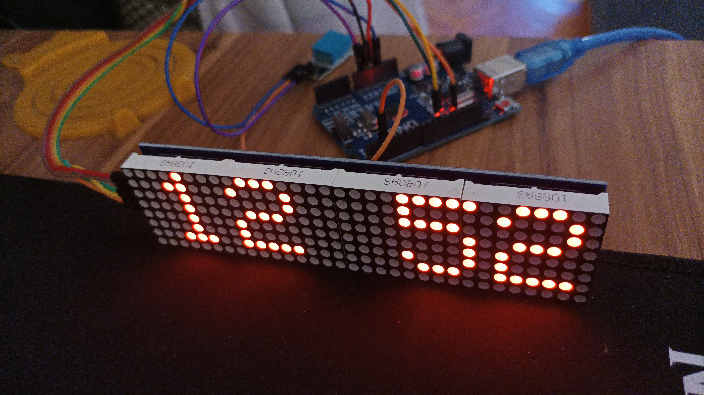

Relojino
Decile paranoia pero creo que mi despertador chino me espía. No tiene internet ni chip para almacenar cosas, pero siento que me espía.
Así que revolviendo el jonca de las cosas, encontré una matrix de leds de 4x4x8. Agarré el arduino, unos dupont, un modulo RTC y a codear.
La base salió andando y con todo tirado así en cuestión de horas tenía un reloj 100% mío.

Le agregué un sensor de temperatura/húmedad para que no sea tan aburrido pero por ahora solo está implementada la parte del reloj.
El código está en mi github.